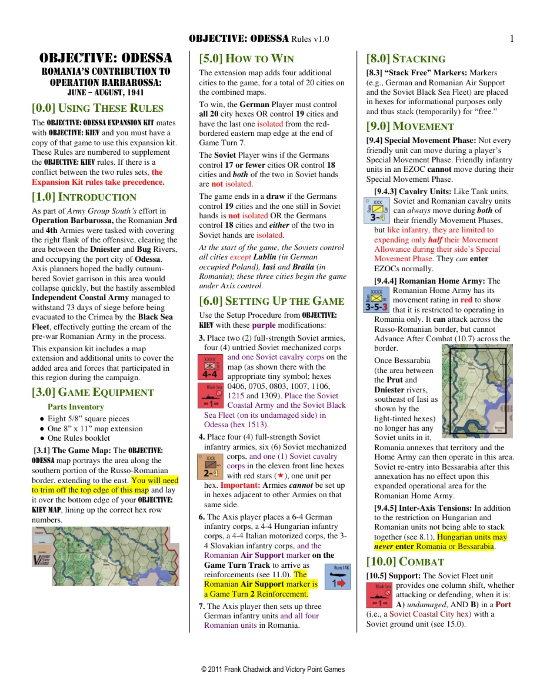
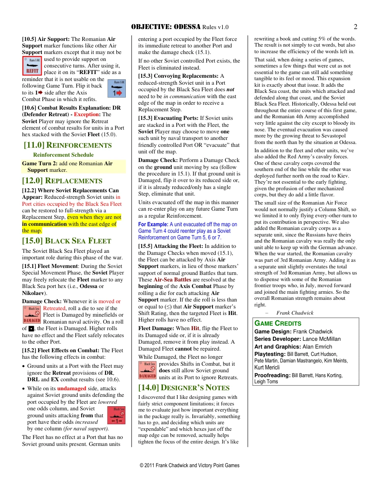

Objective: Odessa expansion
Source reading edition. Extracted text may contain reading-order or formatting errors; consult the original page for tables, diagrams and exact wording. Printed rules are not a statement of active engine adaptations. Use the in-game Terrain Effects and CRT references for active configuration.
Read base Kiev rules first; expansion overrides apply.
Numbered cases (15)
Repeated printed numbers are preserved as separate entries. Page images remain authoritative.
Printed page 1
Original page — illustrations and exact layout

Objective: Odessa
Romania’s contRibution to
Operation Barbarossa:
June – August, 1941
[0.0] USING THESE RULES
The Objective: Odessa Expansion Kit mates with Objective: Kiev and you must have a copy of that game to use this expansion kit. These Rules are numbered to supplement the Objective: Kiev rules. If there is a conflict between the two rules sets, the Expansion Kit rules take precedence.
[1.0] INTRODUCTION
As part of Army Group South’s effort in Operation Barbarossa, the Romanian 3rd and 4th Armies were tasked with covering the right flank of the offensive, clearing the area between the Dniester and Bug Rivers, and occupying the port city of Odessa. Axis planners hoped the badly outnum- bered Soviet garrison in this area would collapse quickly, but the hastily assembled Independent Coastal Army managed to withstand 73 days of siege before being evacuated to the Crimea by the Black Sea Fleet, effectively gutting the cream of the pre-war Romanian Army in the process. This expansion kit includes a map extension and additional units to cover the added area and forces that participated in this region during the campaign.
[3.0] GAME EQUIPMENT
Parts Inventory ● Eight 5/8” square pieces ● One 8” x 11” map extension ● One Rules booklet
[3.1] The Game Map: The Objective: Odessa map portrays the area along the southern portion of the Russo-Romanian border, extending to the east. You will need to trim off the top edge of this map and lay it over the bottom edge of your Objective: Kiev map, lining up the correct hex row numbers.
[5.0] HOW TO WIN
The extension map adds four additional cities to the game, for a total of 20 cities on the combined maps. To win, the German Player must control all 20 city hexes OR control 19 cities and have the last one isolated from the red- bordered eastern map edge at the end of Game Turn 7. The Soviet Player wins if the Germans control 17 or fewer cities OR control 18 cities and both of the two in Soviet hands are not isolated. The game ends in a draw if the Germans control 19 cities and the one still in Soviet hands is not isolated OR the Germans control 18 cities and either of the two in Soviet hands are isolated. At the start of the game, the Soviets control all cities except Lublin (in German occupied Poland), Iasi and Braila (in Romania); these three cities begin the game under Axis control.
[6.0] SETTING UP THE GAME
Use the Setup Procedure from Objective: Kiev with these purple modifications:
3. Place two (2) full-strength Soviet armies,
four (4) untried Soviet mechanized corps
and one Soviet cavalry corps on the map (as shown there with the appropriate tiny symbol; hexes 0406, 0705, 0803, 1007, 1106, 1215 and 1309). Place the Soviet Coastal Army and the Soviet Black Sea Fleet (on its undamaged side) in Odessa (hex 1513). 4. Place four (4) full-strength Soviet
infantry armies, six (6) Soviet mechanized
corps, and one (1) Soviet cavalry corps in the eleven front line hexes with red stars (), one unit per hex. Important: Armies cannot be set up in hexes adjacent to other Armies on that same side. 6. The Axis player places a 6-4 German
infantry corps, a 4-4 Hungarian infantry corps, a 4-4 Italian motorized corps, the 3- 4 Slovakian infantry corps, and the Romanian Air Support marker on the Game Turn Track to arrive as reinforcements (see 11.0). The Romanian Air Support marker is a Game Turn 2 Reinforcement. 7. The Axis player then sets up three
German infantry units and all four Romanian units in Romania.
[8.0] STACKING
[8.3] “Stack Free” Markers: Markers (e.g., German and Romanian Air Support and the Soviet Black Sea Fleet) are placed in hexes for informational purposes only and thus stack (temporarily) for “free.”
[9.0] MOVEMENT
[9.4] Special Movement Phase: Not every friendly unit can move during a player’s Special Movement Phase. Friendly infantry units in an EZOC cannot move during their Special Movement Phase.
[9.4.3] Cavalry Units: Like Tank units,
Soviet and Romanian cavalry units can always move during both of their friendly Movement Phases, but like infantry, they are limited to expending only half their Movement Allowance during their side’s Special Movement Phase. They can enter EZOCs normally.
[9.4.4] Romanian Home Army: The
Romanian Home Army has its movement rating in red to show that it is restricted to operating in Romania only. It can attack across the Russo-Romanian border, but cannot Advance After Combat (10.7) across the border. Once Bessarabia (the area between the Prut and Dniester rivers, southeast of Iasi as shown by the light-tinted hexes) no longer has any Soviet units in it, Romania annexes that territory and the Home Army can then operate in this area. Soviet re-entry into Bessarabia after this annexation has no effect upon this expanded operational area for the Romanian Home Army.
[9.4.5] Inter-Axis Tensions: In addition to the restriction on Hungarian and Romanian units not being able to stack together (see 8.1), Hungarian units may never enter Romania or Bessarabia.
[10.0] COMBAT
[10.5] Support: The Soviet Fleet unit
provides one column shift, whether attacking or defending, when it is: A) undamaged, AND B) in a Port (i.e., a Soviet Coastal City hex) with a Soviet ground unit (see 15.0).
Printed page 2
Original page — illustrations and exact layout

[10.5] Air Support: The Romanian Air Support marker functions like other Air Support markers except that it may not be
used to provide support on consecutive turns. After using it, place it on its “REFIT” side as a reminder that it is not usable on the following Game Turn. Flip it back to its 1 side after the Axis Combat Phase in which it refits.
[10.6] Combat Results Explanation: DR (Defender Retreat) - Exception: The Soviet Player may ignore the Retreat element of combat results for units in a Port hex stacked with the Soviet Fleet (15.0).
[11.0] REINFORCEMENTS
Reinforcement Schedule Game Turn 2: add one Romanian Air
Support marker.
[12.0] REPLACEMENTS
[12.2] Where Soviet Replacements Can Appear: Reduced-strength Soviet units in Port cities occupied by the Black Sea Fleet can be restored to full-strength via a Replacement Step, even when they are not in communication with the east edge of the map.
[15.0] BLACK SEA FLEET
The Soviet Black Sea Fleet played an important role during this phase of the war.
[15.1] Fleet Movement: During the Soviet Special Movement Phase, the Soviet Player may freely relocate the Fleet marker to any Black Sea port hex (i.e., Odessa or Nikolaev). Damage Check: Whenever it is moved or
Retreated, roll a die to see if the Fleet is Damaged by minefields or Romanian naval activity. On a roll of 1, the Fleet is Damaged. Higher rolls have no effect and the Fleet safely relocates to the other Port.
[15.2] Fleet Effects on Combat: The Fleet has the following effects in combat:
Ground units at a Port with the Fleet may
ignore the Retreat provisions of DR, DRL and EX combat results (see 10.6).
While on its undamaged side, attacks
against Soviet ground units defending the port occupied by the Fleet are lowered one odds column, and Soviet ground units attacking from that port have their odds increased by one column (for naval support). The Fleet has no effect at a Port that has no Soviet ground units present. German units
entering a port occupied by the Fleet force its immediate retreat to another Port and make the damage check (15.1). If no other Soviet controlled Port exists, the Fleet is eliminated instead.
[15.3] Convoying Replacements: A reduced-strength Soviet unit in a Port occupied by the Black Sea Fleet does not need to be in communication with the east edge of the map in order to receive a Replacement Step.
[15.3] Evacuating Ports: If Soviet units are stacked in a Port with the Fleet, the Soviet Player may choose to move one such unit by naval transport to another friendly controlled Port OR “evacuate” that unit off the map. Damage Check: Perform a Damage Check on the ground unit moving by sea (follow the procedure in 15.1). If that ground unit is Damaged, flip it over to its reduced side or, if it is already reduced/only has a single Step, eliminate that unit. Units evacuated off the map in this manner can re-enter play on any future Game Turn as a regular Reinforcement. For Example: A unit evacuated off the map on Game Turn 4 could reenter play as a Soviet Reinforcement on Game Turn 5, 6 or 7.
[15.5] Attacking the Fleet: In addition to the Damage Checks when moved (15.1), the Fleet can be attacked by Axis Air Support markers, in lieu of those markers’ support of normal ground Battles that turn. These Air-Sea Battles are resolved at the beginning of the Axis Combat Phase by rolling a die for each attacking Air Support marker. If the die roll is less than or equal to (≤) that Air Support marker’s Shift Rating, then the targeted Fleet is Hit. Higher rolls have no effect. Fleet Damage: When Hit, flip the Fleet to its Damaged side or, if it is already Damaged, remove it from play instead. A Damaged Fleet cannot be repaired. While Damaged, the Fleet no longer
provides Shifts in Combat, but it does still allow Soviet ground units at its Port to ignore Retreats.
[14.0] DESIGNER’S NOTES
I discovered that I like designing games with fairly strict component limitations; it forces me to evaluate just how important everything in the package really is. Invariably, something has to go, and deciding which units are “expendable” and which hexes just off the map edge can be removed, actually helps tighten the focus of the entire design. It’s like
rewriting a book and cutting 5% of the words. The result is not simply to cut words, but also to increase the efficiency of the words left in. That said, when doing a series of games, sometimes a few things that were cut as not essential to the game can still add something tangible to its feel or mood. This expansion kit is exactly about that issue. It adds the Black Sea coast, the units which attacked and defended along that coast, and the Soviet Black Sea Fleet. Historically, Odessa held out throughout the entire course of this first game, and the Romanian 4th Army accomplished very little against the city except to bloody its nose. The eventual evacuation was caused more by the growing threat to Sevastopol from the north than by the situation at Odessa. In addition to the fleet and other units, we’ve also added the Red Army’s cavalry forces. One of these cavalry corps covered the southern end of the line while the other was deployed further north on the road to Kiev. They’re not essential to the early fighting, given the profusion of other mechanized corps, but they do add a little flavor. The small size of the Romanian Air Force would not normally justify a Column Shift, so we limited it to only flying every-other-turn to put its contribution in perspective. We also added the Romanian cavalry corps as a separate unit, since the Russians have theirs and the Romanian cavalry was really the only unit able to keep up with the German advance. When the war started, the Romanian cavalry was part of 3rd Romanian Army. Adding it as a separate unit slightly overstates the total strength of 3rd Romanian Army, but allows us to dispense with some of the Romanian frontier troops who, in July, moved forward and joined the main fighting armies. So the overall Romanian strength remains about right.
– Frank Chadwick GAME CREDITS Game Design: Frank Chadwick Series Developer: Lance McMillan Art and Graphics: Alan Emrich Playtesting: Bill Barrett, Curt Hudson, Pete Martin, Damian Mastrangelo, Kim Meints, Kurt Mericli Proofreading: Bill Barrett, Hans Korting, Leigh Toms